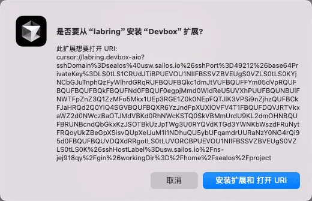
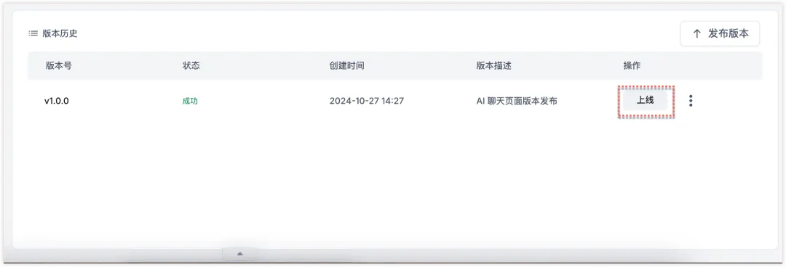

相关阅读
- 不会前端也能写官网？没问题，Devbox+Cursor 带你起飞
- 3分钟部署上线小产品？Cursor 和 Devbox 让开发从未如此简单！
- 我一行代码也没写，Cursor 和 Devbox 给我写了个高仿苹果官网！
- 使用Cursor和Devbox告别Nginx环境配置噩梦，让Nginx开发效率提升300%
- 别再浪费时间配置环境了！这个比 Laf 还牛的云开发框架，让我3分钟搭建完整应用
- Devbox 开发 C/C++，在 Cursor 终端里玩俄罗斯方块
- 一篇文章告诉你 Devbox 是如何从架构上干掉 CI/CD 的，连渣都不剩
- 我真的一行代码都没写啊！都是Cursor和Devbox做的！它甚至写完了还直接帮我部署了
- 35岁程序员使用Cursor和Devbox手撕基于Rust的WASM智能合约
- 还在使用昂贵的虚拟机？来试试 Devbox，便宜 6 倍！
- Sealos Devbox 发布，珍爱生命，远离 CI/CD
我用 Cursor + Devbox 一键搞定开发环境，别人还在配数据库

Sealos
2024年11月01日“你用 Cursor 怎么这么快就搞完了一个app”
“对啊，一键搞定。”
“开玩笑吧？光线上环境、数据库环境就得配置半天吧？”
"因为 Devbox 已经帮我们把所有环境都预配置好了，直接写代码就行。"
今天我就给大家展示一下如何用最简单的方式，实现开发、测试与生产环境的无缝衔接。

什么是Devbox？：https://ads.sealos.run/app_store/tool/devbox/
创建开发环境
首先创建 Devbox 项目，并通过本地的 IDE 进行远程连接。
【在 Sealos 桌面，打开 Devbox，新建一个项目，选择一种语言或框架作为运行环境，自定义配置CPU 内存，后期随时可以修改。】
接着会提示安装 Devbox 插件，安装后即可自动连接开发环境。

是不是非常简单？直接省略了配置域名解析、申请 SSL 证书，配置网关等与开发无关的繁琐操作，爽！
本地开发项目
在绑定了 Devbox 项目的 Cursor 界面，我们看到了初始化的代码结构。
这里以 Python 项目为例来演示，我们来演示下如何启动代码。
我们在左下方右击空白处，点击 Open in integrated Terminal 打开控制台。
输入命令 : python3 hello.py , 不出现任何报错，则代表启动成功。
其他编程语言，或者框架，具体启动命令以实际为准，如果不清楚，可以直接问 Cursor。
我们打开本地浏览器，查看下运行效果。这里的端口是 8080，那么地址为：http://localhost:8080
发布线上
这次的分享主题是「代码快速上线」，那这个 demo 在互联网上怎么查看效果呢？
我们回到 Devbox 项目中，点击外网地址，就可以在公网看到效果啦。


当然，这只是用初始化的代码演示的效果。接下来，我们来展示下修改部分代码后，怎么更新线上环境。
更新代码
这里以修改网页内容为例，加上 I am Jay 的字符，记得保存代码。

在控制台（Terminal）按 Ctrl + C 关闭应用，再输入命令 python3 hello.py 重新启动。
无论本地还是线上都会立刻更新成功，不需要做任何多余的动作，线上代码就生效了。
但是，我们并没有完成线上发布哦，毕竟电脑不可能一直运行程序，后续步骤会介绍。
创建 AI 聊天页面
「Hello World」，毕竟太简单了。
接下来，我们以一个真实有效的小案例 -- 接入Sealos AI Proxy 大模型的AI 聊天工具 来展示下全过程。
一）提前准备事项
1. 基于代码案例和需求，编写简单的提示词。
帮我根据下方的代码请求和响应示例，创建一个 AI 聊天页面。
需求：用户在页面聊天窗口输入信息，点击发送后，将收到 AI 流式输出的回复效果。
代码请求示例：
from zhipuai import ZhipuAI
client = ZhipuAI(api_key="") # 请填写您自己的APIKey
response = client.chat.completions.create(
model="glm-4", # 请填写您要调用的模型名称
messages=[
{"role": "system", "content": "你是一个乐于回答各种问题的小助手，你的任务是提供专业、准确、有洞察力的建议。"},
{"role": "user", "content": "我对太阳系的行星非常感兴趣，尤其是土星。请提供关于土星的基本信息，包括它的大小、组成、环系统以及任何独特的天文现象。"},
],
stream=True,
)
for chunk in response:
print(chunk.choices[0].delta)
代码响应示例：
```
data: {"id":"8313807536837492492","created":1706092316,"model":"glm-4","choices":[{"index":0,"delta":{"role":"assistant","content":"土"}}]}
data: {"id":"8313807536837492492","created":1706092316,"model":"glm-4","choices":[{"index":0,"delta":{"role":"assistant","content":"星"}}]}
....
data: {"id":"8313807536837492492","created":1706092316,"model":"glm-4","choices":[{"index":0,"delta":{"role":"assistant","content":"，"}}]}
data: {"id":"8313807536837492492","created":1706092316,"model":"glm-4","choices":[{"index":0,"delta":{"role":"assistant","content":"主要由"}}]}
data: {"id":"8313807536837492492","created":1706092316,"model":"glm-4","choices":[{"index":0,"finish_reason":"length","delta":{"role":"assistant","content":""}}],"usage":{"prompt_tokens":60,"completion_tokens":100,"total_tokens":160}}
data: [DONE]
```2. 使用Sealos AI Proxy，生成并复制 API Key
3、启动文件中加入 SDK
为了确保接下来能够正常上线，我们需在进入 Devbox 绑定的 Cursor 代码里的启动文件 -- entrypoint.sh，添加 SDK 的安装命令。
entrypoint.sh 完整内容如下：
#!/bin/bash
python3 -m venv venv # 创建虚拟环境
source venv/bin/activate # 激活虚拟环境
pip install --upgrade zhipuai -i https://mirrors.aliyun.com/pypi/simple/
python3 hello.py
二）基于 Cursor 生成 AI 聊天页面
1.打开 Composer，输入提前准备的提示词。

2. 配置提前准备好的 API Key，并确定所使用的智谱模型版本。glm-4-flash 是免费的，其他模型官方也提供了免费额度。
3. 控制台输入命令 ./entrypoint.sh 启动项目，打开网页查看效果。
4. 最后，整体功能就绪后，再优化下页面。

三）发布上线
1.首先进行 Devbox 项目详情，点击发布版本。
填写本地发版的版本号和描述信息。
注意，发布将暂时停止 Devbox，发版后会自动启动。

稍等一会，在版本历史界面我们点击 上线，将会跳转到正式环境的配置界面。
2.按照需求配置正式环境的硬件参数。
如果未来，我们的网站流量过大，我们可以点击「部署模式」为 弹性伸缩，这样服务器会根据流量和负载的情况来扩充配置，避免程序宕机。
前面这段话和弹性伸缩相关的图片，对于非技术的朋友可能会有点难以理解。
举个例子：
某宝在双十一之前，流量一般，所以硬件要求不高，一台服务器就够了。
但是双十一到了，为了分担流量高峰所带来的压力，保证软件应用不挂掉，系统会自动扩充到 100台服务器。
双十一过去后，流量慢慢变小了，这时候为了避免浪费资源，系统自动缩小到 5 台甚至更少的服务器。
这样的部署方式就是「弹性伸缩」。
3、配置网络（可选）
官方提供的域名没什么特定含义。我们可以自定义网站域名。若不需要，可跳过此步骤。
进入我们自己的阿里云域名列表，选择一个域名，点击右侧的解析，添加一条记录。
记录类型 选择 CNAME，主机记录 根据喜好填写一个自定义的二级域名**， 记录值** 填写 Devbox 提供的域名，最后确定。
为了检查配置是否生效，点击新增记录右侧的 生效检测。当解析结果和配置的记录值一致，则代表成功了。
再回到 Devbox 中配置自定义域名，点击确认。
最后，部署应用。
出现 running 的字眼，则代表运行成功。
最后，使用自己的域名来访问线上的页面，成功。
抛开代码编程和调试，仅针对部署过程，基本上只需花费 3 分钟左右。
总结
在传统开发中，连接开发环境的数据库就像是穿越千山万水去约会 - 要配 IP、调防火墙、改配置。但在 Sealos 中，Cursor 和数据库就像住在隔壁的青梅竹马，想约就约，连个电话都不用打。这种开发体验，不就是我们每个开发者心中的 "理想型" 吗？
有了这对神仙搭档，你就可以把更多精力放在实现产品创意上，而不是被繁琐的环境配置耗尽耐心。
关于 Sealos
Sealos 是一款以 Kubernetes 为内核的云操作系统发行版。它以云原生的方式，抛弃了传统的云计算架构，转向以 Kubernetes 为云内核的新架构，使企业能够像使用个人电脑一样简单地使用云。